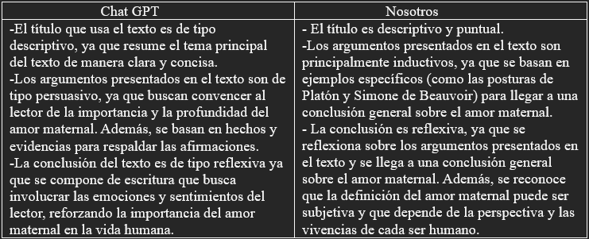
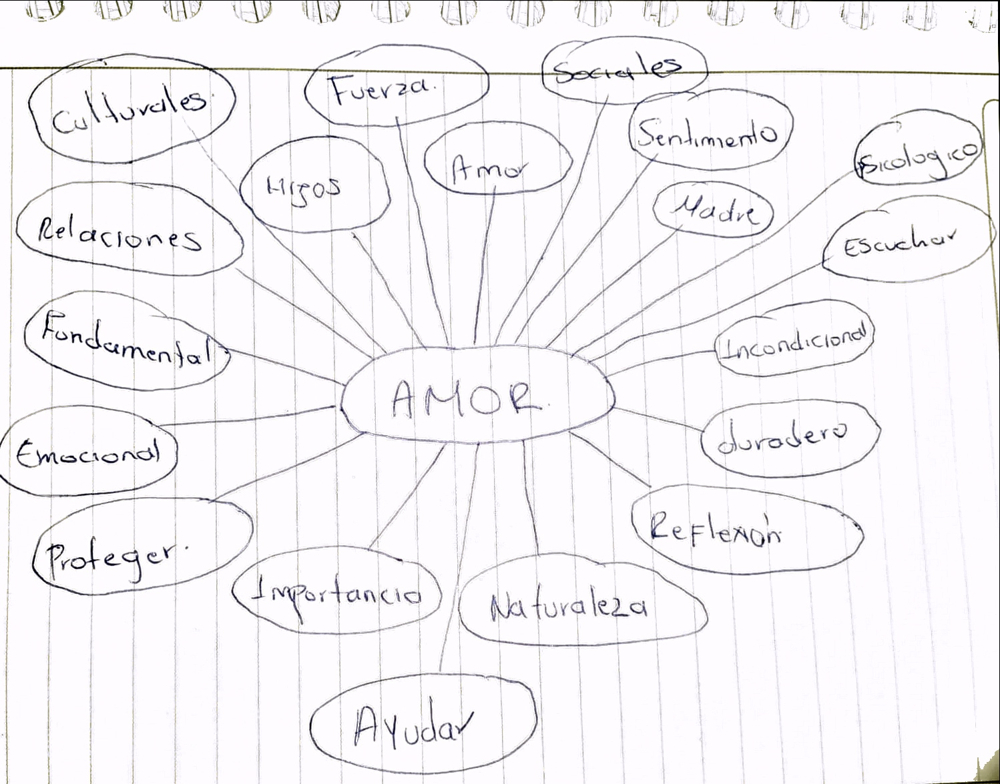
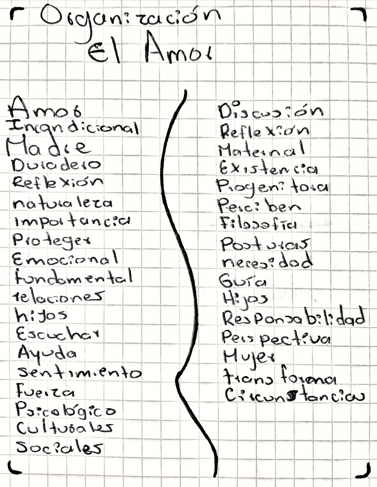
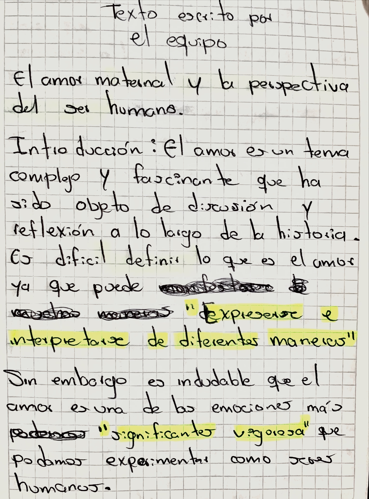
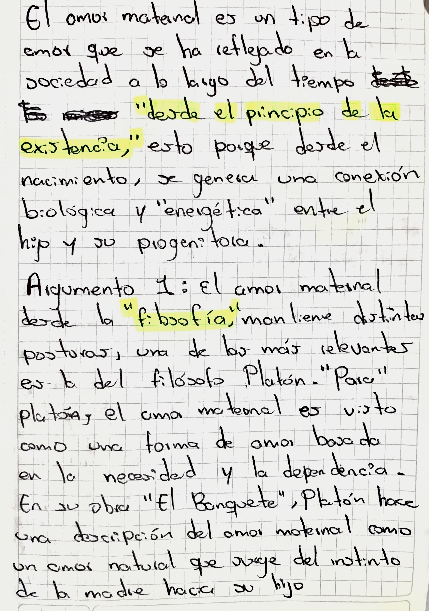
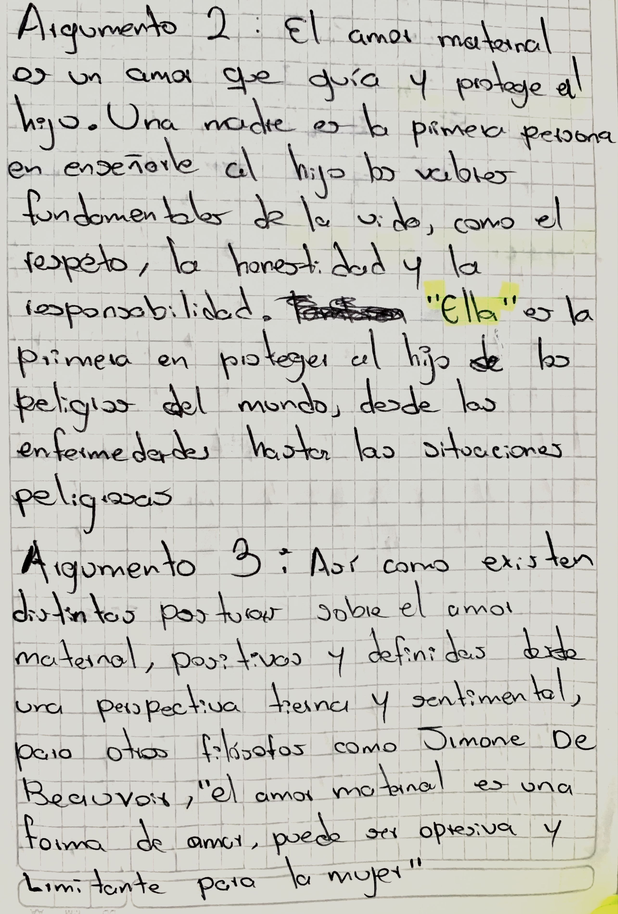
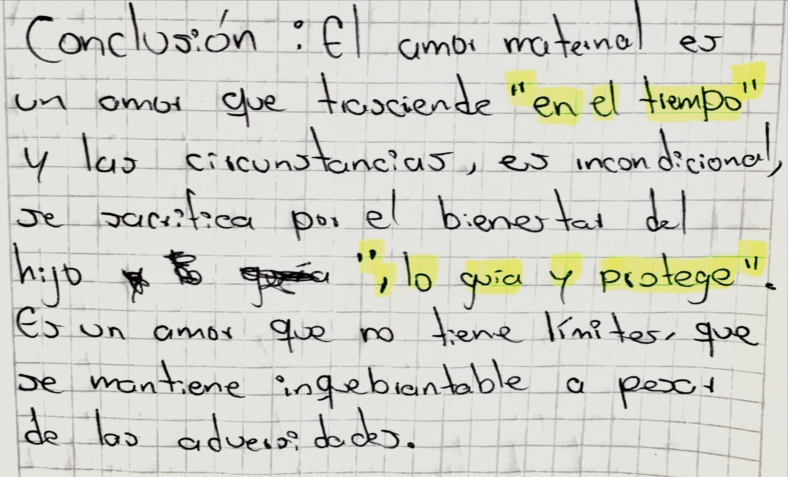

La sapa caramela
Maria Camila Rangél:
Había una vez una Sapa caramela que estaba en un peñasco, la Sapa caramela había ido allí aquella noche
con el fin de mirar las estrellas y preguntarse el porqué de su existencia vasta, preguntándose por qué no podía ser una de aquellas estrellas.
La Sapa caramela notó un fastidio o una molestia en la punta de su nariz y se dio cuenta de que era un moco ya que llevaba varios días enferma,
al intentar quitarse el moco de su nariz con sus pequeñas patas, la Sapa perdió el equilibrio y resbaló del peñasco clavándose una estaca en su pecho
antes del llegar al suelo. Por el bosque iba paseando una persona que había cuidado de Caramela toda su vida y la visitaba de vez en cuando para alimentarla
y acompañarla, pero se encontró con esta escena en dónde vio a su pequeña amiga a punto de la muerte; a aquella persona se le hizo un nudo en la garganta
y se sorprendió porque por primera vez, escuchó unas palabras que provenían de todos los lados posibles del bosque, aquellas palabras en medio de la
insonorización por los ruidos de la noche, le decían que la muerte no era más que un descanso del plano físico para luego probar
la verdadera existencia, y que ahora, Caramela, se convertiría en una de esas estrellas que alumbraban el firmamento e iluminaria con sus fotones
el bosque y la tierra. La persona tomó el cuerpo de Caramela, lo coloco sobre una tapa y la cubrió con una hoja para darle un digno descanso a
su cuerpo, y cuando la colocó en el lago, las estrellas la iluminaron sin parar, provocando una escena preciosa e increíble a la vista de un
simple humano. Ahora, la nueva esperanza de la vida y la muerte era aquella estrella quien, en algún momento de la existencia,
fue una simple Sapa, la Sapa caramela.Lizeth Román García:
Estaba la sapa caramelo sentada a la orilla del rio cauca en el peñasco
mas alto de la región, la sapa caramelo se sentía libre y tranquila en aquel precioso lugar ya que le traía paz a su vida. Ella miro
a la profundidad del peñasco sacándose un enorme moco de su nariz sintiendo un gran descanso, al bajarse de allí se
encontró con una gran estaca se sintió miedo e imagino cosas horribles intento bajarse de allí y siguió su camino observando
todo a su alrededor se sentía serena vio el nudo de su zapato soltarse y lo ato era algo tan sencillo que nunca había
notado que lo hacía.
Veía todo con ojos diferente nunca había notado que cosas tan simples que hacía
normalmente fueran un gran espectáculo cuando le colocabas la suficiente atención,
lo que había tirado en el piso como una vieja tapa de gaseosa, la verdad todo esto le dio para reflexionar
de la vida y notar las pequeñas cosas que son demasiado importantes y así encontrar una esperanza en todo lo
pequeño y bueno que hay en la vida y encontrar un gran significado y así poder superar todo lo que le afectaba.
Alison Yiseth Puerta Velez
Estaba la sapa caramela sentada a la orilla del rio cauca en el peñasco
más alto de la región, se encontraba contando flores porque se encontraba aburrida de repente esta estornudo gracias al polen y al hacerlo un moco
se le salió; la sapa caramela decidió caminar por el peñasco y en una cueva se encontró con una estaca, esta decidió tomarla y observarla más de
cerca y pudo observar que en la estaca se encontraba atada con una cuerda la cual contenía un gran nudo, esta decidió seguir la cuerda y ver
hacia donde la dirigía, una vez al final de la cuerda se encontró un barril el cual estaba sellado gracias a una tapa; esta decidió ignorar
el barril y dejar de explorar e irse a su casa para el encuentro con su hermana Esperanza.
Juan Pablo Muñoz Benitez
Estaba la sapa caramelo sentada a
la orilla del río Cauca en el peñasco más alto de la región. Mientras admiraba el paisaje de su bella
ciudad ella comía mocos luego se percató de que estaba muy oscuro y debía volver a su hogar pero
era muy peligroso y no podía andar sin precaución, cuando de repente sintió una estaca en su
espalda y la sapa caramelo inmediatamente empezó con su escabullida, el temor y desesperación de
no saber qué la atacaba, hacía de la noche una eternidad, de repente, un nudo en su garganta
la hizo detenerse y mirar qué estaba pasando y cómo reaccionar para sobrevivir del ataque sorpresa,
ella se encuentra una tapa gigante en la cual podrá esconderse hasta desaparecer de su atacante
misteorioso, llena de esperanza; espera sobrevivir y dirigirse hacia las autoridades para comentar su caso
Funciones del lenguaje
En está temática se hablo sobre el refinador de las funciones del lenguajes el cual es Román Jakobson. Este decia que a las funciones que creo Karl Bühler estaban incompletas y las remodelo de la siguiente foma:
1. Función emocional
La función expresiva (también llamada emotiva o sintomática) se centra en el emisor. Esta aparece en aquellos mensajes en los que predomina la subjetividad y, por lo tanto, el emisor expresa sus sentimientos, emociones, estados de ánimo, etc.
2. Función conativa
La función apelativa o conativa se centra en el receptor. Está presente en aquellos mensajes en los que el emisor tiene como objetivo condicionar o alterar la conducta del receptor. Esta función se manifiesta, sobre todo, en oraciones imperativas, exhortativas e interrogativas.
3. Función referencial
La función referencial (también llamada representativa o informativa) se centra en el contenido del mensaje y la situación. Aparece en aquellos mensajes en los que se informa de algo de manera objetiva.
4. Función metalingüística
Esta función se centra en el propio código de la lengua. Se utiliza para hablar del propio lenguaje; aclara el mensaje. Se manifiesta en declaraciones y definiciones, y en la lengua escrita se percibe señalándola con comillas o cursivas: "Pedro tiene 5 letras". En la lengua oral, la palabra destacada recibe una entonación especial o se destaca con el acento de intensidad.
5. Función poética o estética
Esta función está orientada al mensaje. Aparece siempre que la expresión atrae la atención sobre su forma, en cualquier manifestación en la que se utilice el lenguaje con propósito estético. Abundan, puesto que su objetivo es llamar la atención por el uso especial del código, las figuras estilísticas. Esta función se encuentra especialmente, aunque no exclusivamente, en los textos literarios.
6. Función fática
La función fática o función relacional está orientada al canal de comunicación entre el emisor y el receptor. Su propósito es iniciar, prolongar, interrumpir o finalizar una conversación o bien sencillamente comprobar si existe algún tipo de contacto. Su contenido informativo es nulo o escaso y se utiliza como forma o manera de saludo.
Técnicas de cominicación asertiva
En está tematica ya que no implementamos en las exposiciones de las funciones de lenguaje las tecnicas de comunicación asertiva a los compañeros que no habían expuesto les toco exponer sobre estas técnicas y estás fueron:
- Técnica de la escucha activa
- Técnica del acuerdo asertivo
- Técnica del rechazo sutil
- Técnica del clarificación
- Técnica de aplazamiento
- Técnica del cambio ajeno
- Técnica del banco de niebla
- Técnica del disco rayado
- Técnica para el cambio
Comunicación no verbal
En está temática se nos asigno a cada uno de los grupos un tipo de comunicación verbal para exponer en la próxima clase, estos se dividen en 6 grupos, las técnicas todas estaban relacionas y estás son las siguientes:
Proxemia
La proxémica es el estudio de la comunicación no verbal relacionada con el uso del espacio y la distancia. Es un campo fascinante que proporciona información sobre cómo las personas se comunican e interactúan entre sí sin siquiera decir una palabra.
Kinesis
La kinesis es un estudio de los movimientos corporales, producto de los pensamientos conscientes e inconscientes que comunican un mensaje emocional, ya sea para reafirmar o para contradecir lo que se expresa verbalmente. Sirve para obtener la información del comportamiento de las
personas respecto de las emociones y motivaciones reales de los individuos que se analizan.
Comunicación no verbal
La comunicación no verbal es la transmisión de mensajes sin hacer uso del habla, como es el contacto visual, expresiones faciales, gestos, expresiones corporales, y posturas; incluye el uso de señales, kinésica, distancia, y entornos físicos, vocales y del tacto.
Emblemas y ademanes
Son comportamientos no vocales que pueden ser traducidos directamente a palabras, tienen un significado específico. Algunos ejemplos de emblemas son agitar la mano en señal de saludo, el acto de indicar.
Microexpresiones
Las micro expresiones son breves movimientos involuntarios e inconscientes en los músculos faciales que están asociados a unas emociones básicas: ira, asco, miedo, tristeza, felicidad, sorpresa y desprecio.
Caracteristicas de la voz
Articulación:
Los modos en que la voz se modifica a través de los movimientos de los órganos del aparato fonador, para conseguir sonidos determinados y así formar, por ejemplo, las palabras.
Tono o entonación:
La modulación en el ritmo de producción de la voz, que permite atribuirle a los sonidos un cariz específico, como la emoción o el acento.
Timbre:
El modo individual y característico con que la voz es producida, pudiendo ser graves (bajas) o agudas (chillonas).
Intensidad:
La cantidad de fuerza con que se obtienen los sonidos, pudiendo recaer en algunas partes de la cadena sonora, como en las distintas sílabas de una palabra.-
Texto Argumentativo
En está temática no explicaron sobre 7 pasos para la escritura
los cuales son: 1.Tematica, 2. PII (investigar e indagar), 3. lluvia de ideas, 4. Organizar, 5. Redacción, 6. Corrección de estilos y revisión,
a mi equipo nos toco el tema El Amor, se hará un debate sobre el texto argumentativo al final de todo y se habló sobre los tipos
de textos argumentativos:

Temática: El amor
PII: Consultamos sobre El Amor, pero no tenemos las bibliográfias.
Lluvia de ideas:

Organización:

Redacción, correción de estilos y revisión:



